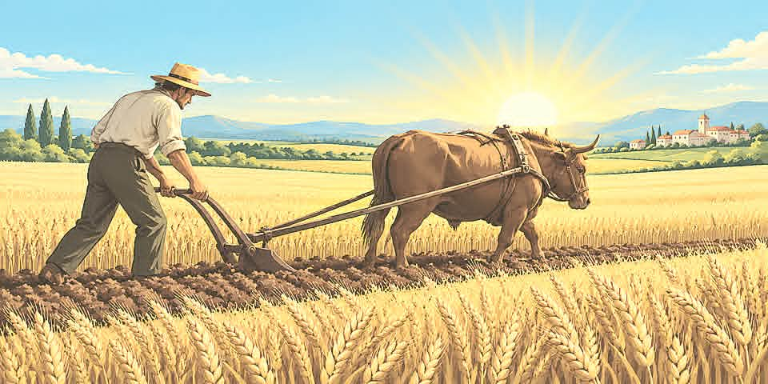

![ALKAMO]()
الإعدادات ⚙
عدد اللاعبين
نمط اللعب
أسماء اللاعبين
مدة الجولة ⏱
لعبة الكلمات
✦ ابحث عن الكلمة المناسبة ✦

يحصل كل لاعب على 10 أحرف. يُسحب موضوع تلقائيًا.
انقر على الأحرف أو اسحبها إلى منطقة تكوين الكلمة. لديك 3 دقائق. يكفي حرفان لتكوين كلمة في خانات المواضيع.
كوّن أي كلمة — دون أي قيد على الموضوع! طول الكلمة محدد: 7 إلى 9 أحرف في C1، و6 في A3، و7 في C3، و6 إلى 8 في E3، و8 في C5 (مع مكافأة +10 في C1 وC5).
تُفتح نافذة لاختيار الحرف الذي يمثله الجوكر.
انقر تفعيل التغيير، اختر الأحرف الحمراء، ثم تأكيد. فقط إذا لم ينتهِ الوقت!
الخانتان C1 وC5: +10 نقاط مكافأة. كلمة خارج الموضوع = إلغاء النقاط.
أيّ حرف يجب أن يمثّله هذا الحرف البديل؟
الأسماء والأفعال بصيغة المصدر فقط · من حرفين إلى 10 أحرف
هل تريد فعلًا إنهاء الجولة؟
ستُعرض النتائج.